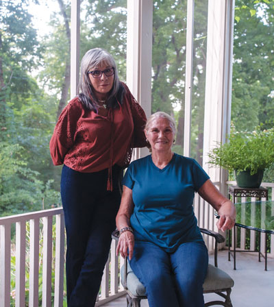
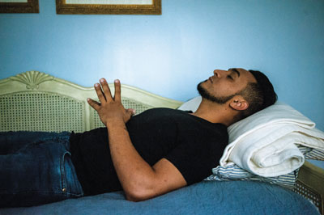

A soft place to land
Sanctuary families give asylum seekers an overdue welcome

Photos by Joseph Rushmore
“I always tell people: ‘Get ready to fall in love with José,’” said Mary Coleman Woolslayer, looking expectantly down a hallway in her elegant midtown home. “He’s just the kindest, most gentle, most loving man. He’s family.”
In a black T-shirt and jeans, with carefully-groomed hair framing a handsome face, 36-year-old José walked into the living room and sat down among the plush sofas and polished wood. Flanked by Woolslayer and the project manager of the New Sanctuary Network (NSN), Linda Allegro, he darted quick glances from his hands to the ceiling and back again as our interview began. Woolslayer held him gently in her peripheral vision, like a mother tracking the emotional temperature of her child.
These women are and aren’t José’s family. This is and is not his home. For the time being, it’s liminal space. One of thousands caught up by Immigration and Customs Enforcement (ICE) in the chaos of the Trump administration’s zero-tolerance border policy, José—a surgeon who was under threat from political violence in his home country, Venezuela—was seized in Laredo, Texas, on May 11 while presenting himself to authorities for asylum. He was bussed across the country in shackles, then detained in an ICE facility at David L. Moss Criminal Justice Center in Tulsa for 70 days.
Thanks to a sponsorship program NSN launched this summer, José was rescued from detention and has spent the last six weeks being fed, clothed, and loved in the Tulsa home of a retired kindergarten teacher who happens to be a regular protestor at the jail.
His life is and is not his own. But for today, José is safe and cared for, receiving a welcome from his sanctuary family that’s the opposite of the one he got at the border.
“I’ve actually tried to forget the name of that place,” José said through Allegro’s translation as he pieced together the story of what happened to him between May 11 and May 21 in Laredo, Texas. He sometimes broke into a laugh as he spoke—not from delight, he explained, but from nervousness.
Two years ago in Venezuela, José’s oldest brother, a lawyer, was assassinated by the government. Despite the country’s brutal political unrest, José had been doing well, working in emergency surgery in hospitals in his hometown. But in December, he began to receive threats against his life and was severely beaten.
“I’d never planned to live in the U.S.,” he said. “If I would have, I’d have studied English, or come in my twenties. But this happened, and I had to make a quick decision.” His dream, to go to Spain to study, would have cost €4,000. He could make it to the U.S. for around $200.
He Googled instructions on how to seek political asylum in America. He learned what steps to take, what papers you need, how to do it just exactly as you’re supposed to. A long journey brought him to the border crossing in Monterey, Mexico. Passport in hand, instructions memorized, he walked over the bridge and presented himself to the U.S. authorities on the other side.
He was immediately seized and taken to a room full of families with children. It was called “the freezer.” Another nearby room was boiling hot. People stayed in that initial detention for up to seven days, he said, during which they were fed once a day. José was there for 36 hours, handcuffed to his seat.
Conditions were so unbearable that he actually asked to be deported. Instead, he was taken from among the 3,000 detainees in that facility, loaded on to a bus with 91 other men, and shipped to Tulsa. Bound at the wrists and ankles, the men stomped their feet and sang at the top of their lungs to keep the drowsy bus driver from falling asleep on the dangerous roads. If the bus overturned, they knew they were dead.
After an 18-hour trip, the men were unloaded at David L. Moss.
No visits were allowed for José and the other men shipped from Laredo that night. Phone calls home were exorbitantly expensive. Meals were Cream of Wheat with jelly on top, cabbage, liver, and beans. NSN volunteers kept putting money in the men’s commissary kiosks, but for every five dollars they put in, Woolslayer said, three were taken out by the authorities for “fees.”
“When I got to Moss, I felt more lost than ever,” José said. “I was losing the will to live. I had never been arrested before, never been in any type of criminal environment. They didn’t have mirrors but I could see my reflection sometimes, and I looked so gaunt.”
For José—who had no family in America, who could not contact his own family in Venezuela, who had been seeking a productive life free from the fear of being gunned down like his brother, who had survived trauma and had still done everything right in his attempt to obtain asylum—detention was worse than an inconvenience or an insult. It was killing him.
It was local activists who first noticed something was up. One day over the summer, as immigration activist Chris Shoaf was combing through the dockets (something he regularly does), his attention spiked at a larger-than-usual number of Hispanic names.
“Usually it’s like, someone was apprehended in Owasso, someone got put on an ICE hold in East Tulsa. Sheriffs will bring in people piecemeal,” Allegro explained. “This was a whole list. We ended up finding out that 91 asylum seekers had been brought up here from the border.”
There was no public announcement of the delivery. Most people, Allegro said, don't even know that the jail keeps 250 beds just for immigration detainees. But processing a busload of asylum seekers was something new even for the ICE officials.
One of these men caught the attention of Professor Mimi Marton of the University of Tulsa’s Immigrant Resource Network, and she contacted Allegro. “She said, ‘There’s this one guy, José, who is just an exemplary person, a doctor in his country, and he’s really going through this mental breakdown. He’s been in detention for a long time. It’s just too much.’”
Confirmation came from a source at the jail, who expressed concern for the physical and mental well-being of many of the asylum seekers.
“The men were melting down. They were losing a lot of weight. Most people in jail have a relative who puts money in the kiosk for them to eat,” Allegro said. “If you don’t have any family you’re just getting boiled cabbage and potatoes. These are the kinds of things we were hearing about.”
Marton’s recommendation?
“A sponsor.”
For the past year, NSN has held weekly protests against detention and deportation at David L. Moss. The Network also provides accompaniment services, where free people can use their relative privilege to stand with undocumented people who are terrified to appear before an immigration judge on their own. NSN’s efforts to coordinate sanctuary programs in local churches had stalled out due in part to white churches’ lack of organic connection to the immigrant community. Though the heart to help was there, Allegro said, getting temporary sponsorship through churches proved unworkable.
But these reports about the detainees called for immediate action, so she tried a more direct approach. Allegro called Woolslayer, who’d been protesting with NSN since its beginnings. “I said, ‘Wouldn’t it be amazing, Mary? You have a place where people could actually heal.’ She’s like, ‘I’ll do this. I can open my home.’”
The process, it turns out, was relatively straightforward. José had received a positive finding in his screening interview, which determined that he had a credible fear of returning to his country. He wasn’t a danger to the community or a flight risk. TU legal experts would continue to shepherd his case. A few phone calls and a notarized letter later, ICE agreed to release him into Woolslayer’s care. José’s first request, as they drove away from the parking lot downtown, was to be taken to a church, so he could give thanks to God for his freedom.
José’s composure as he spoke was obviously hard-won. “When you’re going through it,” he said, “you feel that you are nobody, nothing—that you have no worth. When I first came out, I wouldn’t have been able to tell this story. It’s been a month now and I feel like I can talk. I’m able to control the way I tell it without breaking down. I’m focusing on my mental well-being, because the mind controls the body. I think it’s going to take a long time for me to become emotionally stable again.”
“I’ve seen him suffer,” Woolslayer said. “I’ve had coffee with him some mornings when he’s been up all night with nightmares of people chasing him with guns, holding a gun up to his head. It’s been very emotional for me, as a mother. When you first get them, they’re so damned scared. I can’t take away all the pain. But as long as he needs me and as long as he wants to be here, I am very happy for him to be here.”
For Carol Johnson, who teaches English and creative writing at Tulsa Community College, the chance to be a temporary sponsor was just what she’d been waiting for. Two weeks after José’s release, Johnson’s pastor at Fellowship Congregational Church, Chris Moore, heard about a man named Moises, another detainee who was suffering horribly in the jail. Could anyone host him, Moore asked his congregation, until he could return to the border, where he’d been separated from his wife and child?
“I always wanted to do something,” Johnson said. “I never went to the protests, but I’d sit in my church and listen to everything the pastor said. I knew it was the right thing to do, but it was never the right time for me. But this time it was.”
Through her church, Johnson got connected to NSN and ICE. She downloaded a translation app and waited for the call. She learned to say one thing: “I’ll be right there, Moises.”
“I went to Moss the next day at 10 p.m.,” she said. “They let out 10 people at a time. It’s night, it’s downtown, and I thought: If he’s out here, he’s prey. He’s out here alone. I kept calling out, ‘Moises?’ Finally this guy comes out and he’s got a huge grin and nothing with him but this manila envelope. I got out of the car and he said, ‘I so happy.’ And he hugged me.”
Moises, who like José had to make a quick decision under duress to seek asylum, stayed with Johnson and her husband for a week. Like Woolslayer, she bought him T-shirts and underwear and watched him stare in awe at the cornucopia at Reasor’s. He washed his own dishes, even after she told him many times they had a dishwasher. He went to church with her, called his wife every day, and got in touch with José, who had been at David L. Moss with him.
“We both cried when he left,” Johnson said. “My church got him a bus ticket because he wasn’t allowed to fly. My husband gave him the cowboy boots that he never wanted, that I made him buy to go dancing—and [Moises] loved those boots.”
Moises was happy, but anxious to get back to his family. When it was time to go, Johnson packed food for him to take on the journey, tucked into a backpack along with a gift that Robin Sherman at TU Law had given him: a card with his constitutional rights on it.
“When he left, he said: ‘You are my beloved friend, and I will never forget you.’
“You know, I came from nothing,” Johnson continued. “Now I’m a professor and I make some money. My son’s grown. I live with my husband and four cats. How can you not do something, if you came from nothing and there were people there to love you and get you through that? I got to do something that I think changed my life. Because I became less of a wannabe and more a doer.”
Moises and José are success stories for NSN’s nascent sponsorship program. There may be more busloads of asylum seekers coming, though, and despite their preference for more permanent situations for those who get released, ICE officials here are listening as Allegro and Marton’s team at TU argue for humane treatment of these innocent men.
“The main discussion we had recently with ICE was not just about us managing the legal piece until the men were settled. It was really about the humanity of keeping torture survivors in a jail,” Marton said. “It’s a problem when you’re incarcerating trauma survivors and asylum seekers in the general population of people accused and convicted of some pretty serious crimes. The consequences for their mental health are severe. It disturbed everybody.”
Marton commended the ICE officials at Moss for their accessibility. “We have some good conversations,” she said. “And we work hard to maintain those relationships. We may have really different political perspectives, but it seems like the organizations (ICE, TU Law, and NSN) have all understood that we’re working with human beings. That’s really heartening.”
In her 38 years teaching kindergarten at Monte Cassino, Woolslayer saw countless children come through her classroom doors frightened at being away from their families for the first time. She saw the same fear in José’s eyes. “Here was a man who basically didn’t know where he was,” she said. “I knew that my job was to be calm, to make him feel secure and show him his room and ask if he was hungry.
“After protesting at Moss for a year and reading those names, I knew in my gut what he had been through. I wanted to show him respect, that there are good and loving Americans—people who want him to do well.”
For Woolslayer, who said that she very much wants people to know who she is and what she’s doing, it’s a simple matter of humanity. “Isn’t that the first thing we learn in church? That we’re all brothers and sisters? And then come to find out some people don’t think we are and treat other people as though they’re not.
“He can’t go back to his country,” she said. “But he will be an asset to this country. I want to help him however I can.”
Despite his release from detention, José said he is in some ways more frightened now than ever, as he waits for an immigration judge in Dallas to decide his fate next month.
“If I would have known what I had to go through, I would not have sought asylum in this country,” he said. “The reason why I did come was because friends told me that in the U.S. they respect human rights, liberties, freedoms. I knew those were beautiful values. I thought, ‘I want that.’ That’s what I was told I would find here.”
For the first time in a long time, thanks to the care of Woolslayer, Allegro, and everyone involved in his sponsorship, José is beginning to feel something other than terror. “I’ve really felt loved,” he said. “The people who have crossed my path recently have just been so loving to me.”
José is taking English lessons now. He wants to go into communications, to make good on the promise he made to God to help others if he got released.
And he’s studying the life of Abraham Lincoln.
“He’s a very fascinating man, driven by God,” he said. “He’d launch into one candidacy and lose, then launch into another. There’s a lot to learn from his story. He represents America to me.”


.jpg)
.jpg)